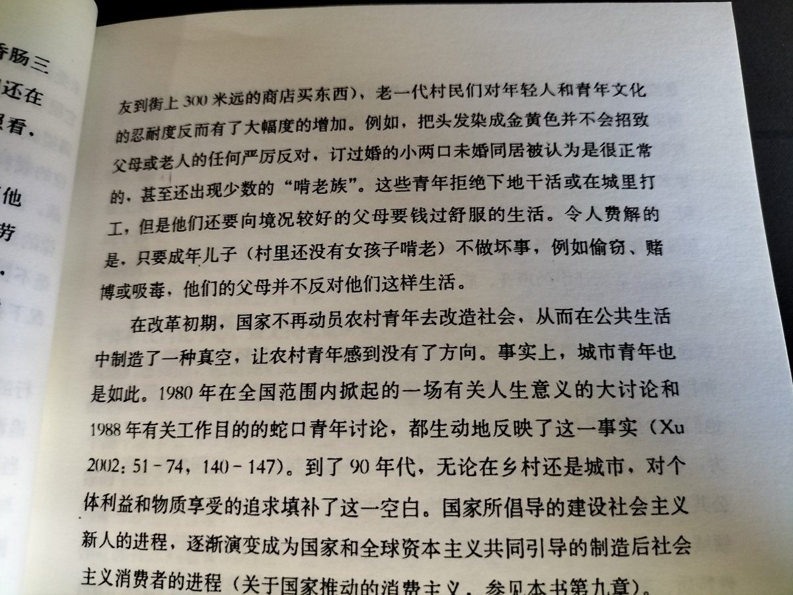

1980年5月，《中国青年》杂志发表了署名“潘晓”的来信 《人生的路呵，怎么越走越窄……》。这封信是结合两位青年（黄晓菊、潘祎）的真实困惑整理而成，集中表达了当时青年在理想与现实反差下的普遍痛苦、迷茫，核心问题是 “人生的意义究竟是什么”。
讨论持续了8个月，杂志收到超过6万封来信来稿，并开辟专栏刊登了其中20多万字的代表性文章。全国多家报刊转载，工厂、机关、学校自发组织了无数讨论会，几乎影响了整整一代人的价值观。官方也通过《人民日报》等介入引导，最终结论强调个人价值应与社会价值统一，为当时的思想迷茫提供了过渡性的方向。
《人生的路呵，怎么越走越窄……》
我今年23岁，应该说才刚刚走向生活，可人生的一切奥秘和吸引力对我已不复存在，我似乎已走到了它的尽头。回顾我走过来的路，是一段由紫红到灰白的历程；一段由希望到失望、绝望的历程；一段思想长河起于无私的源头，而终以自我为归宿的历程。
过去，我对人生充满了美好的憧憬和幻想。小学的时候，我就听人讲过《钢铁是怎样炼成的》和《雷锋日记》。虽然还不能完全领会，但英雄的事迹也激动得我一夜一夜睡不着觉。我还曾把保尔关于人生意义的那段著名的话：“人的一生应当这样度过：当回忆往事的时候，他不会因为虚度年华而悔恨，也不会因为碌碌无为而羞愧……”工工整整地抄在日记本上的第一页。日记本记完了，我又把它抄在第二个本上。这段话曾给我多少鼓励呀。我想，我爸爸、妈妈、外祖父都是共产党员，我当然也相信共产主义，我将来也要入党，这是毫无疑义的。
讨论持续了8个月，杂志收到超过6万封来信来稿，并开辟专栏刊登了其中20多万字的代表性文章。全国多家报刊转载，工厂、机关、学校自发组织了无数讨论会，几乎影响了整整一代人的价值观。官方也通过《人民日报》等介入引导，最终结论强调个人价值应与社会价值统一，为当时的思想迷茫提供了过渡性的方向。
《人生的路呵，怎么越走越窄……》
我今年23岁，应该说才刚刚走向生活，可人生的一切奥秘和吸引力对我已不复存在，我似乎已走到了它的尽头。回顾我走过来的路，是一段由紫红到灰白的历程；一段由希望到失望、绝望的历程；一段思想长河起于无私的源头，而终以自我为归宿的历程。
过去，我对人生充满了美好的憧憬和幻想。小学的时候，我就听人讲过《钢铁是怎样炼成的》和《雷锋日记》。虽然还不能完全领会，但英雄的事迹也激动得我一夜一夜睡不着觉。我还曾把保尔关于人生意义的那段著名的话：“人的一生应当这样度过：当回忆往事的时候，他不会因为虚度年华而悔恨，也不会因为碌碌无为而羞愧……”工工整整地抄在日记本上的第一页。日记本记完了，我又把它抄在第二个本上。这段话曾给我多少鼓励呀。我想，我爸爸、妈妈、外祖父都是共产党员，我当然也相信共产主义，我将来也要入党，这是毫无疑义的。
